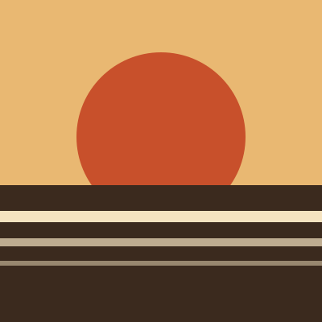
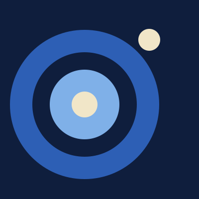
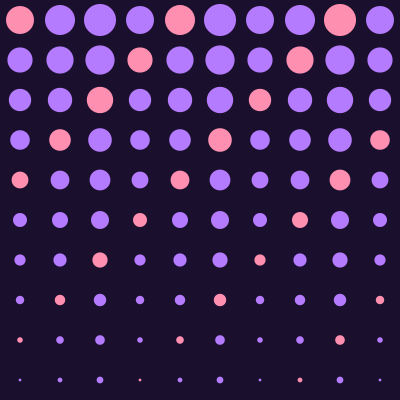
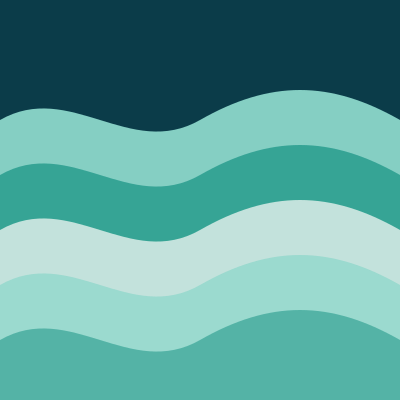

21:1478%
In riproduzione

1:42-3:47
Dispositivi
PC studio
Linux · fermo
Continua su PC studio
Tablet salotto
Aggiorna l'app per continuare qui
Portatile lavoro
non raggiungibile
Cassa cucina
Cassa · Jam e Invia
21:1478%
In riproduzione
1:42-3:47
Dispositivi
Jam attiva
3 ascoltatori · sei l'host
PC studio
Linux · fermo
Tablet salotto
Aggiorna l'app per continuare qui
Esci dalla Jam per continuare altrove
21:1478%
In riproduzione
In ascolto su PC studio · Riprendi qui
1:42-3:47
21:1478%
Buonasera
Riprendi



Per te

Linee d'Acqua
Cielo Basso

Come Neve
I Gelsomini
In ascolto su PC studioRiprendi qui · Sale e Vento
Home
Cerca
Libreria
In ascolto su PC studio · Riprendi qui
21:1478%
Buonasera
Riprendi
Per te
Linee d'Acqua
Cielo Basso
Come Neve
I Gelsomini
Sul Pixel di casa sta suonando Sale e Vento · Continua qui
Ore PiccoleMaré
Home
Cerca
Libreria
FreeKmusic · ora
Condivido brani con PC studioPC studio sta riproducendo brani da questo telefono.